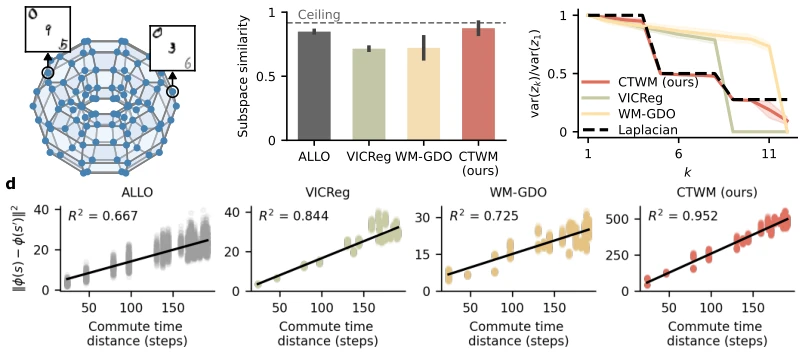
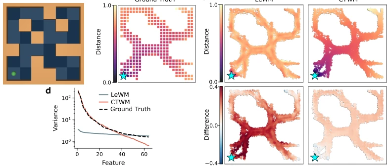

This paper attempts to inject a "graph theory soul" into world models, enabling latent space distances to directly correspond to commute times in the environment. Theoretically very appealing, it proves convergence to a scaled Laplacian representation under deterministic dynamics. However, in reality, most self-supervised learning (SSL) forcefully enforces isotropy to prevent collapse, thereby flattening the anisotropy most needed for planning. CTWM uses residual prediction plus log-det regularization to forcibly recover this geometric structure. Although parameters are halved, it can still match or even surpass LeWM. But forcing graph theory spectral embedding into a continuous pixel world is like using Newtonian mechanics to calculate quantum entanglement—the theory is perfect, implementation depends on luck. However, reconstructing environment topology without reward signals truly understands "maps" better than Dreamers who only know how to reconstruct pixels. This ambition of "reward-free maps", although possibly just a coincidence in specific environments, at least proves that planning-friendly geometric structures are not unlearnable.
The core of embodied intelligence lies in "imagining the future", and the quality of imagination depends on latent space geometry. Classic RL theory points out that the Euclidean distance of Laplacian representation can precisely reflect commute-time between states, which is crucial for planning (Mahadevan & Maggioni, 2007). However, existing task-agnostic world models (such as LeWM, Maes et al., 2026b) generally adopt regularization methods like SIGReg or VICReg to prevent collapse, forcing latent variable distributions to be isotropic (isotropic). This leads to them preventing representation collapse but destroying eigenvalue-dependent scaling, making latent space distances unable to accurately reflect environment topology (Balestriero & LeCun, 2025). This is like building a map where the scale is messed up, so navigation naturally gets lost easily. The authors point out that existing SSL methods lack this planning-friendly geometric structure, urgently needing a new paradigm that can both prevent collapse and retain spectral embedding characteristics.
CTWM overall adopts a reconstruction-free Joint Embedding Predictive Architecture (JEPA). The pipeline is divided into encoder and dynamic predictor parts. Encoder φ maps observations to latent variables z, predictor T predicts displacement Δ in latent space. There are two core innovations: First, adopting Residual Prediction, i.e., predicting z_{t+1} - z_t rather than z_{t+1}, combined with displacement penalty term β ||T||^2, forcing the encoder to keep continuous states nearby in latent space, avoiding the predictor absorbing excessive displacement. Second, introducing log-det regularizer, i.e., -γ log |Σ|, where Σ is the latent variable covariance matrix. Unlike SIGReg forcing isotropy, log-det constrains eigenvalue product, allowing eigenvalues to scale as λ_k^{-1/2}. Theoretical proof (Theorem 1), under deterministic invertible dynamics, this objective function converges to scaled Laplacian representation, making latent space L2 distance proportional to commute time. This design retains collapse prevention ability while recovering the anisotropic geometric structure required for planning.

Figure 2: Torus environment and empirical verification of the theoretical predictions. (a) The torus graph: each vertex carries a unique three-digit label, randomly shuffled across the graph, observed as three MNIST images sampled independently from the corresponding classes at each visit. (b) Subspace similarity to the ground-truth Laplacian eigenbasis for the four methods ± SD (n = 4; see Appendix F); the dashed line indicates the ceiling imposed by the degenerate eigenspectrum. (c) Variance ratio var(zk)/var(z1) against eigenvalue index k (cf. Corollary 1.2), with the ground-truth scaling λ1/λk in dashed black. Only CTWM tracks it, confirming that the log-det regularizer recovers the λ−1/2 k scaling; VICReg and WM-GDO show more isotropic spectra, as encouraged by their respective regula
Experiments are divided into two parts for verification. First, verifying theory on discrete Torus Graph: CTWM's latent space subspace similarity is close to theoretical upper limit, variance distribution strictly follows λ_k^{-1/2} decay, commute time distance fit R^2=0.95, significantly better than VICReg and ALLO. Second, comparing LeWM on continuous RL benchmark (OGBench), including 6 tasks such as Reacher, Cube, Two-Room, etc. CTWM parameter count is only half of LeWM (9M vs 18M), but performance is equal or better on all tasks, especially obvious advantage in long horizon planning (100 steps), LeWM success rate drops significantly in Two-Room and other tasks, while CTWM stays high. Ablation analysis shows residual prediction alone is insufficient to recover geometric structure, log-det regularization is key.

Figure 4: Commute-time distance and variance scaling on Pointmaze. (a) The view of the Pointmaze environment. (b) Ground truth commute-time distance from the blue star to any other point on the map computed from the discretized continuous state space. (c) Top row: Relative L2 distance (normalised) in the embedding space of LeWM (left) and CTWM (right). Bottom row: difference to the ground-truth commute-time distance. CTWM reproduces the ground-truth distance more closely. (d) Variance of the first 64 latent features for both models. CTWM exhibits the λ−1/2 k decay predicted by Corollary 1.2 (dashed line), whereas LeWM produces a flatter spectrum.